数据库查询：过程与截图
NHLI70037 ICA resit 2026 · Bob · SCN1A 变异（题目写法 c.3993C>T，p.Asp1331Glu）不是你的 Chrome （本会话没有 Claude in Chrome）。黄色高亮、红色圆角框和顶部来源栏是我加的，页面内容未改动。按规则未点击、未绕过 ；相关查询改用 NCBI E-utilities 官方接口在浏览器中显示，或用等效公开数据库（gnomAD、VariantValidator、Mutalyzer、UniProt）代替。
0. 结论汇总
# 问题 结果 依据 1 题目写法 c.3993C>T (p.Asp1331Glu) 是否成立 不成立。 c. 与 p. 互相矛盾（第 3 位 C>T 只能把 GAC 变成 GAT，仍是 Asp）；MANE 转录本 c.3993 参考碱基为 A，第 1331 位为 GluD02–D07 2 参考转录本 NM_001165963.4 = MANE Select（= ENST00000674923.1），编码 NP_001159435.1（2009 aa，与 UniProt P35498 序列一致） D01、D06 3 最可能的真实变异（推断 ） NM_001165963.4:c.3993A>T 或 c.3993A>C → p.(Glu1331Asp)；GRCh38 chr2:166009728 T>A / T>G（GRCh37 166866238） D02、D06 4 gnomAD v4.1.2 该位点没有任何变异 （已勾选 Indels 和 Filtered variants）；覆盖良好；相邻位点 AN ≈ 1,605,000 D08–D11 5 ClinVar 第 1331 位无记录；邻近 1328、1329、1333 位有 P/LP 错义 D12、D13 6 旁系同源对应位点 SCN2A p.Glu1321Gln = LP（1 个提交者）；SCN8A p.Glu1311Val = VUS；SCN3A 无记录 D14、D29 7 基因层面 Dravet、GEFS+、DEE 均 Definitive；HI score 3；错义 Z = 8.78；pLoF o/e = 0.07（pLI = 1） D01、D15、D16 8 蛋白位置 E1331 位于 DIII S4 跨膜螺旋（1314–1332）的胞内端，紧邻 S4–S5 linker D17 9 计算预测（p.Glu1331Asp） REVEL 0.613（Pejaver 2022 校准的不确定区间：PP3 和 BP4 都不适用）；AlphaMissense 0.85；CADD 23–26；SpliceAI 全部 0.00 D07、D18–D21 10 保守性（手动比对） E 在 9 个人类 Nav 旁系同源和四足动物直系同源中保守；斑马鱼 scn1laa 为 D ，果蝇 para 为 Q 表 A1 11 ClinGen VCEP SCN1A 细则 v2.0 PM1 适用（PER #10 含 1331）；PM2 仅 Supporting；PP2、PP4 不适用；PP3 用 REVEL 且封顶 Moderate；PS2/PM6 按表型计分 D22–D29
A. 命名与参考序列核对
推导（不依赖任何数据库） ：密码子 n 占 c.(3n−2)～c.3n；3993 = 3 × 1331，所以 c.3993 是第 1331 号密码子的第 3 位 。Asp 的密码子是 GAT/GAC，Glu 是 GAA/GAG（图 D03）。第 3 位 C>T 只能把 GAC 变成 GAT（仍是 Asp，同义）；Asp→Glu 必须是第 3 位变成 A 或 G。因此 “c.3993C>T (p.Asp1331Glu)” 在任何转录本上都不可能同时成立。
A1 参考转录本是 MANE Select
gnomAD 基因页列出 MANE Select = ENST00000674923.1 / NM_001165963.4（D01）；VariantValidator 结果也标注 Transcript Flag: MANE Select（D06）。【需查】 NCBI RefSeq 页面（KEYWORDS “MANE Select”）因验证码未能截图；我用 E-utilities 下载的 GenBank 记录核对过：KEYWORDS = “RefSeq; MANE Select.”，CDS 479..6508，转录本第 4469–4471 位 = gaa（c.3991–3993）。需要的话请在你的 Chrome 打开 https://www.ncbi.nlm.nih.gov/nuccore/NM_001165963.4 补截。
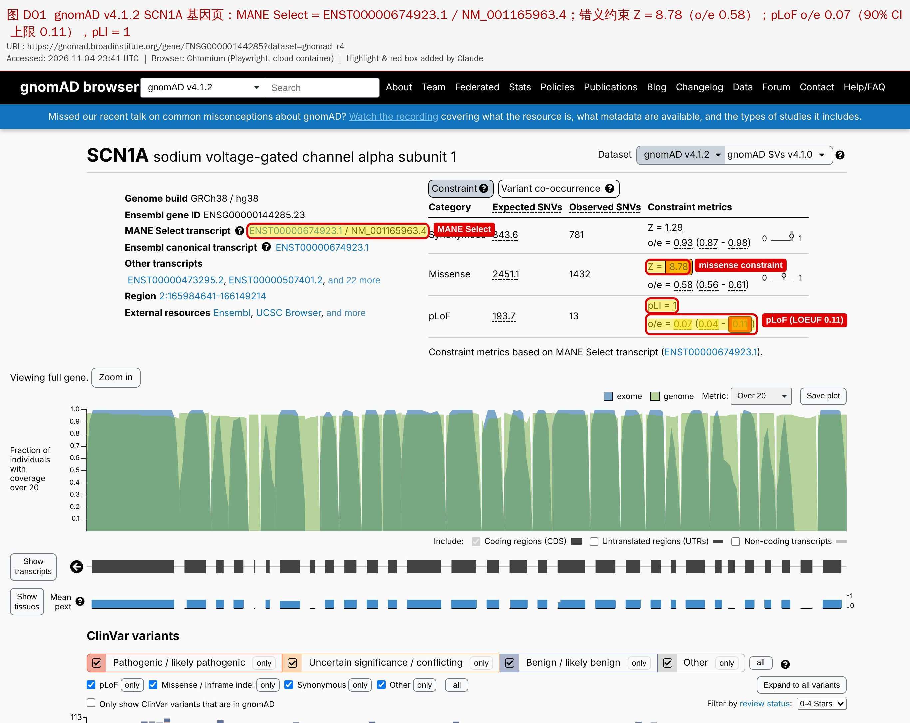
图 D01 gnomAD v4.1.2 SCN1A 基因页：MANE Select = ENST00000674923.1 / NM_001165963.4；错义约束 Z = 8.78（o/e 0.58）；pLoF o/e 0.07（90% CI 上限 0.11），pLI = 1文件：screenshots/D01_gnomAD_MANE与基因约束.jpg | 来源：https://gnomad.broadinstitute.org/gene/ENSG00000144285?dataset=gnomad_r4 | 访问：2026-11-04 23:41 UTC A2 遗传密码
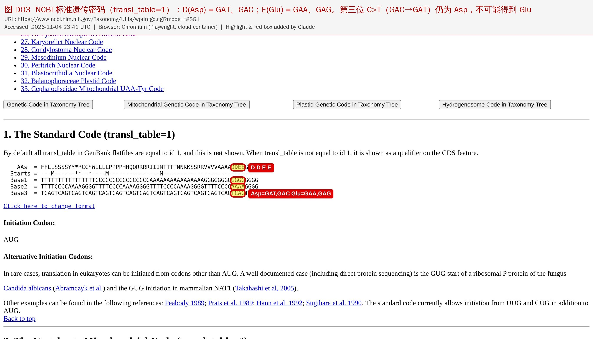
图 D03 NCBI 标准遗传密码（transl_table=1）：D(Asp) = GAT、GAC；E(Glu) = GAA、GAG。第三位 C>T（GAC→GAT）仍为 Asp，不可能得到 Glu文件：screenshots/D03_NCBI_标准遗传密码表_Asp_Glu.jpg | 来源：https://www.ncbi.nlm.nih.gov/Taxonomy/Utils/wprintgc.cgi?mode=t#SG1 | 访问：2026-11-04 23:41 UTC A3 题目写法校验：两个独立工具都报参考碱基不符
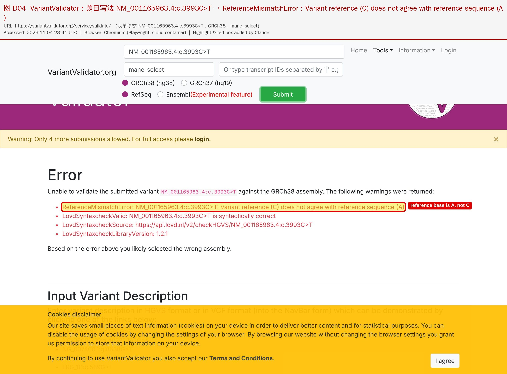
图 D04 VariantValidator：题目写法 NM_001165963.4:c.3993C>T → ReferenceMismatchError：Variant reference (C) does not agree with reference sequence (A)文件：screenshots/D04_VariantValidator_c3993CT_参考碱基不符.jpg | 来源：https://variantvalidator.org/service/validate/ （表单提交 NM_001165963.4:c.3993C>T，GRCh38，mane_select） | 访问：2026-11-04 23:41 UTC 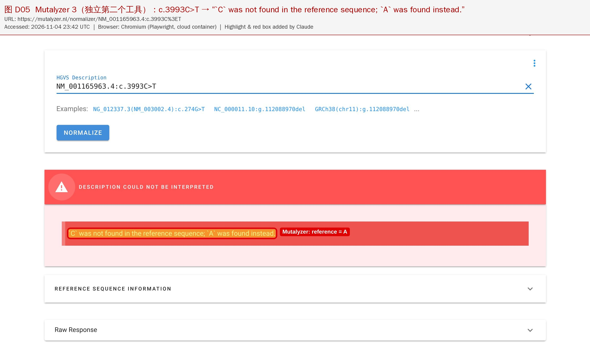
图 D05 Mutalyzer 3（独立第二个工具）：c.3993C>T → “`C` was not found in the reference sequence; `A` was found instead.”文件：screenshots/D05_Mutalyzer_c3993CT_参考碱基不符.jpg | 来源：https://mutalyzer.nl/normalizer/NM_001165963.4:c.3993C%3ET | 访问：2026-11-04 23:42 UTC A4 推断写法校验：c.3993A>T 成立，给出 p.(Glu1331Asp) 和基因组坐标
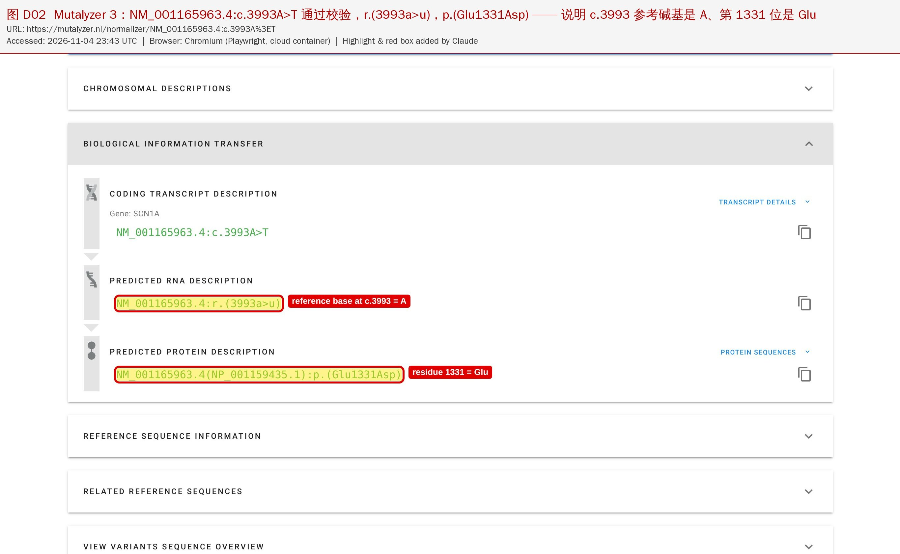
图 D02 Mutalyzer 3：NM_001165963.4:c.3993A>T 通过校验，r.(3993a>u)，p.(Glu1331Asp) —— 说明 c.3993 参考碱基是 A、第 1331 位是 Glu文件：screenshots/D02_Mutalyzer_c3993AT_参考碱基A_Glu1331.jpg | 来源：https://mutalyzer.nl/normalizer/NM_001165963.4:c.3993A%3ET | 访问：2026-11-04 23:43 UTC 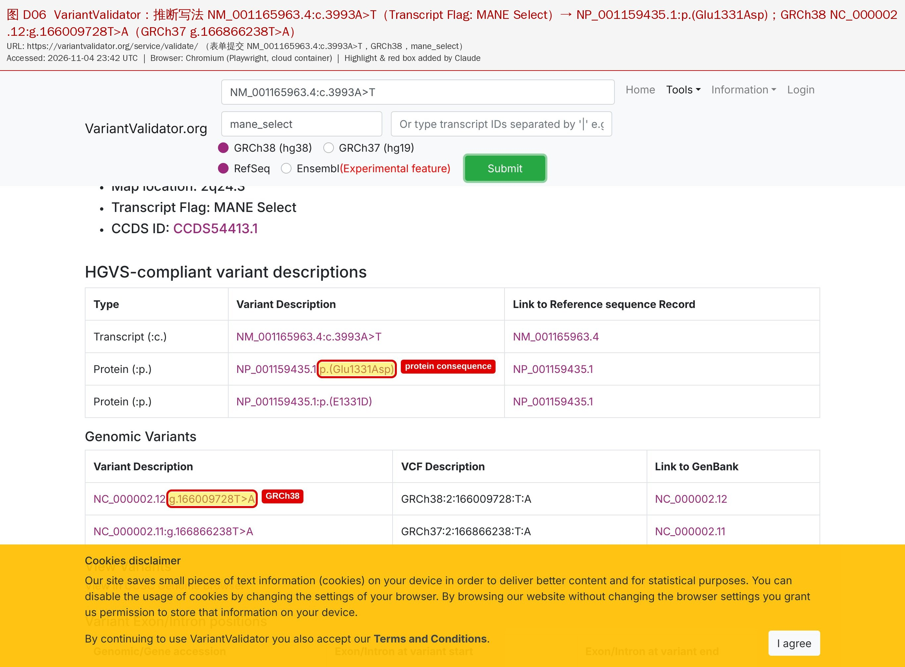
图 D06 VariantValidator：推断写法 NM_001165963.4:c.3993A>T（Transcript Flag: MANE Select）→ NP_001159435.1:p.(Glu1331Asp)；GRCh38 NC_000002.12:g.166009728T>A（GRCh37 g.166866238T>A）文件：screenshots/D06_VariantValidator_c3993AT_Glu1331Asp_GRCh38.jpg | 来源：https://variantvalidator.org/service/validate/ （表单提交 NM_001165963.4:c.3993A>T，GRCh38，mane_select） | 访问：2026-11-04 23:42 UTC A5 dbNSFP 注释：参考密码子 GAA、第 3 位、第 1331 位
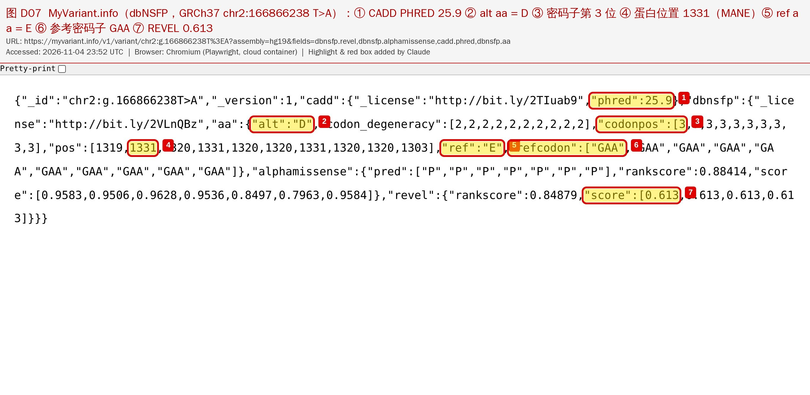
图 D07 MyVariant.info（dbNSFP，GRCh37 chr2:166866238 T>A）：① CADD PHRED 25.9 ② alt aa = D ③ 密码子第 3 位 ④ 蛋白位置 1331（MANE）⑤ ref aa = E ⑥ 参考密码子 GAA ⑦ REVEL 0.613文件：screenshots/D07_dbNSFP_参考密码子GAA_REVEL.jpg | 来源：https://myvariant.info/v1/variant/chr2:g.166866238T%3EA?assembly=hg19&fields=dbnsfp.revel,dbnsfp.alphamissense,cadd.phred,dbnsfp.aa | 访问：2026-11-04 23:52 UTC 补充（脚本核对，未截图）：我把 NCBI 上 5 个 SCN1A RefSeq 转录本逐一翻译，c.3993 在全部转录本上都是 A；第 1331 位分别为 E（NM_001165963.4、NM_001202435.3、NM_001353948.2）、G（NM_006920.6）、L（NM_001165964.3），没有一个是 Asp 。
B. 人群数据（gnomAD v4.1.2）
打开区域 2-166009698-166009758（c.3993 前后各 30 bp），勾选 SNVs、Indels、Filtered variants 、Exomes、Genomes（D08）。
变异表按位置排序：2-166009725（c.3996）之后直接是 2-166009733（c.3988），2-166009728 没有任何变异 。相邻位点 AN ≈ 1,605,000 个等位基因，远超 VCEP 要求的 10,000。
覆盖度图（D09）：第 31 根柱 = chr2:166009728，约 0.95 的个体覆盖 ≥20×。gnomAD API 数值：外显子 mean 29.3×、98% ≥20×；基因组 mean 30.6×、94% ≥20×。
直接打开两个可能变异的页面，均为 “Variant not found”（D10、D11）。gnomAD API 另外确认 2-166009728-T-C 也不存在（该位点三种替换都没有）。
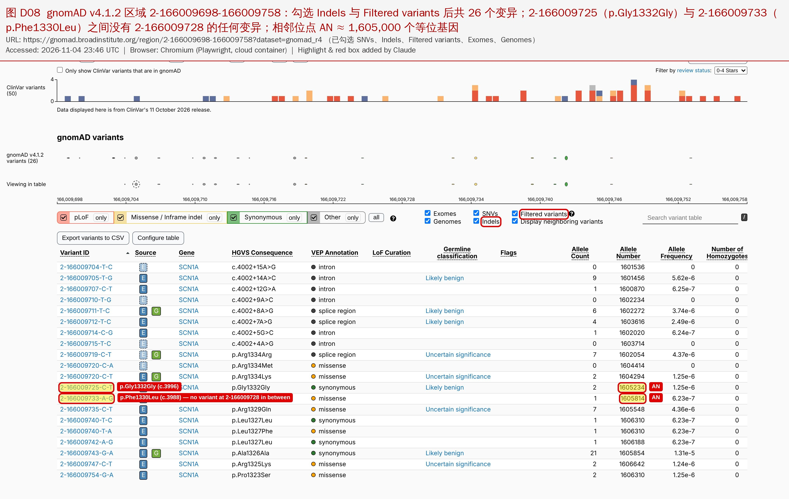
图 D08 gnomAD v4.1.2 区域 2-166009698-166009758：勾选 Indels 与 Filtered variants 后共 26 个变异；2-166009725（p.Gly1332Gly）与 2-166009733（p.Phe1330Leu）之间没有 2-166009728 的任何变异；相邻位点 AN ≈ 1,605,000 个等位基因文件：screenshots/D08_gnomAD_区域变异表_166009728无变异.jpg | 来源：https://gnomad.broadinstitute.org/region/2-166009698-166009758?dataset=gnomad_r4 （已勾选 SNVs、Indels、Filtered variants、Exomes、Genomes） | 访问：2026-11-04 23:46 UTC 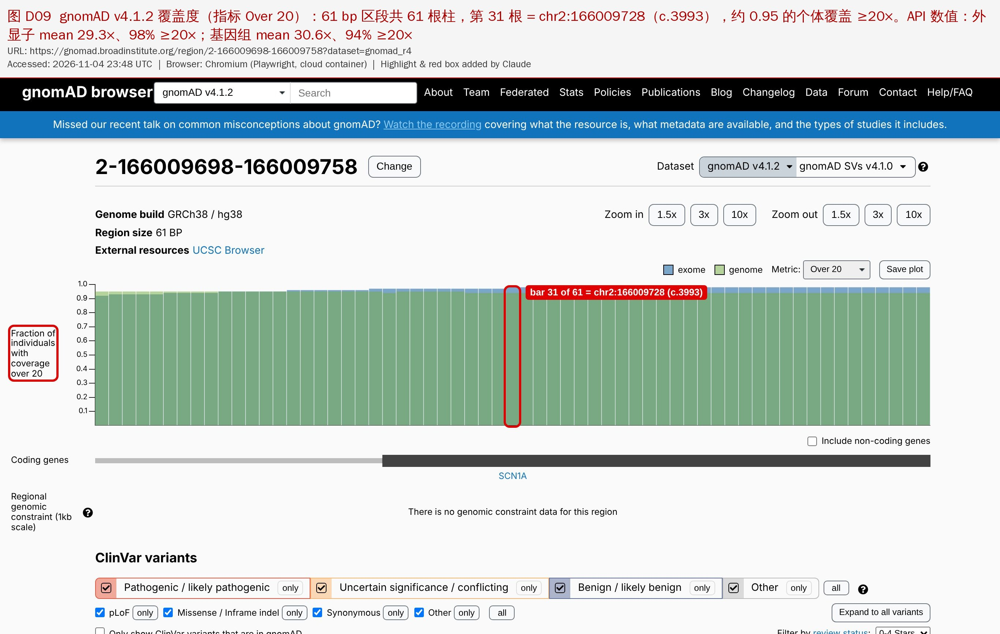
图 D09 gnomAD v4.1.2 覆盖度（指标 Over 20）：61 bp 区段共 61 根柱，第 31 根 = chr2:166009728（c.3993），约 0.95 的个体覆盖 ≥20×。API 数值：外显子 mean 29.3×、98% ≥20×；基因组 mean 30.6×、94% ≥20×文件：screenshots/D09_gnomAD_覆盖度_166009728.jpg | 来源：https://gnomad.broadinstitute.org/region/2-166009698-166009758?dataset=gnomad_r4 | 访问：2026-11-04 23:48 UTC 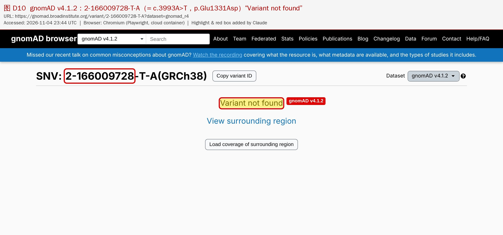
图 D10 gnomAD v4.1.2：2-166009728-T-A（= c.3993A>T，p.Glu1331Asp）“Variant not found”文件：screenshots/D10_gnomAD_2-166009728-T-A_未找到.jpg | 来源：https://gnomad.broadinstitute.org/variant/2-166009728-T-A?dataset=gnomad_r4 | 访问：2026-11-04 23:44 UTC 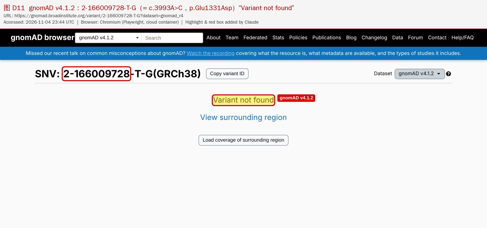
图 D11 gnomAD v4.1.2：2-166009728-T-G（= c.3993A>C，p.Glu1331Asp）“Variant not found”文件：screenshots/D11_gnomAD_2-166009728-T-G_未找到.jpg | 来源：https://gnomad.broadinstitute.org/variant/2-166009728-T-G?dataset=gnomad_r4 | 访问：2026-11-04 23:44 UTC C. 临床数据库
ClinVar 网页对容器浏览器弹验证码（未点），改用 NCBI E-utilities 在浏览器中显示检索结果。另用脚本下载了 SCN1A 全部 5,556 条 ClinVar 记录的摘要，按标题筛选第 1331 位：0 条 ；邻近 1328–1333 位的记录见 D13。
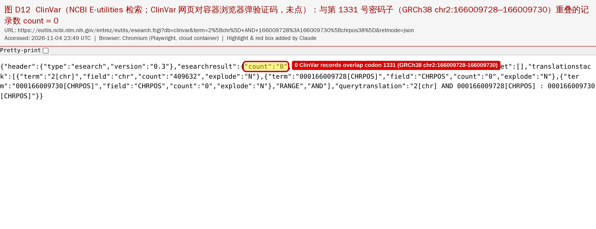
图 D12 ClinVar（NCBI E-utilities 检索；ClinVar 网页对容器浏览器弹验证码，未点）：与第 1331 号密码子（GRCh38 chr2:166009728–166009730）重叠的记录数 count = 0文件：screenshots/D12_ClinVar_第1331位无记录.jpg | 来源：https://eutils.ncbi.nlm.nih.gov/entrez/eutils/esearch.fcgi?db=clinvar&term=2%5Bchr%5D+AND+166009728%3A166009730%5Bchrpos38%5D&retmode=json | 访问：2026-11-04 23:49 UTC 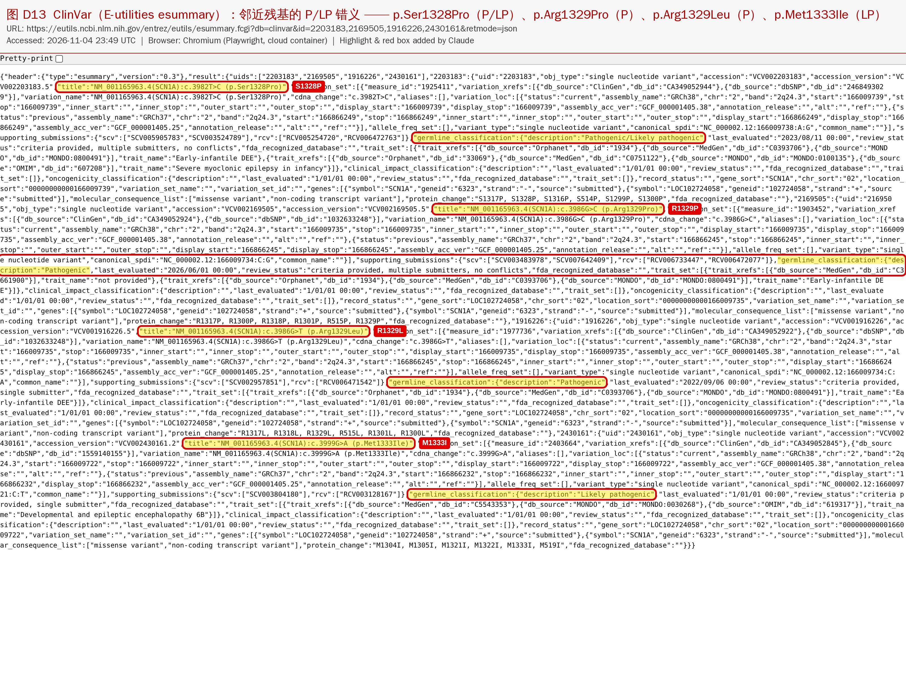
图 D13 ClinVar（E-utilities esummary）：邻近残基的 P/LP 错义 —— p.Ser1328Pro（P/LP）、p.Arg1329Pro（P）、p.Arg1329Leu（P）、p.Met1333Ile（LP）文件：screenshots/D13_ClinVar_邻近残基P_LP错义.jpg | 来源：https://eutils.ncbi.nlm.nih.gov/entrez/eutils/esummary.fcgi?db=clinvar&id=2203183,2169505,1916226,2430161&retmode=json | 访问：2026-11-04 23:49 UTC 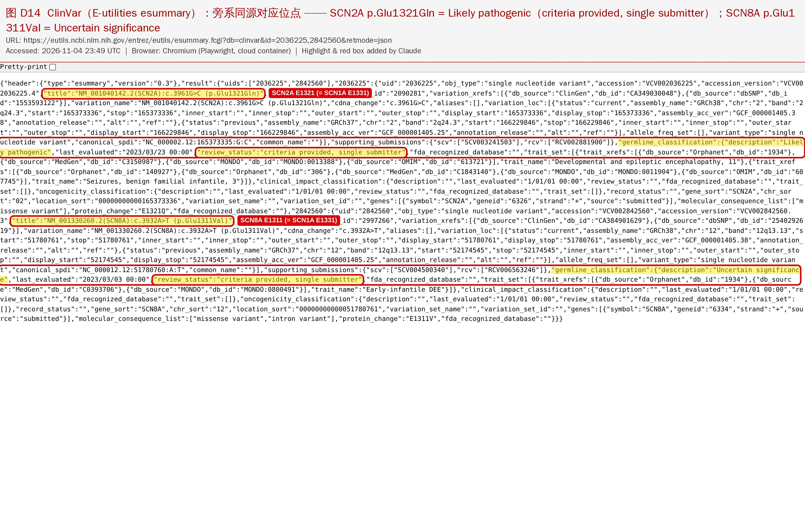
图 D14 ClinVar（E-utilities esummary）：旁系同源对应位点 —— SCN2A p.Glu1321Gln = Likely pathogenic（criteria provided, single submitter）；SCN8A p.Glu1311Val = Uncertain significance文件：screenshots/D14_ClinVar_旁系同源对应位点.jpg | 来源：https://eutils.ncbi.nlm.nih.gov/entrez/eutils/esummary.fcgi?db=clinvar&id=2036225,2842560&retmode=json | 访问：2026-11-04 23:49 UTC 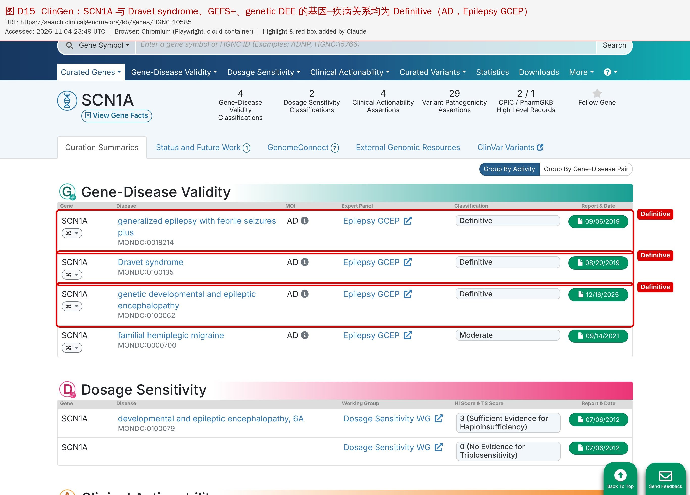
图 D15 ClinGen：SCN1A 与 Dravet syndrome、GEFS+、genetic DEE 的基因–疾病关系均为 Definitive（AD，Epilepsy GCEP）文件：screenshots/D15_ClinGen_基因疾病有效性.jpg | 来源：https://search.clinicalgenome.org/kb/genes/HGNC:10585 | 访问：2026-11-04 23:49 UTC 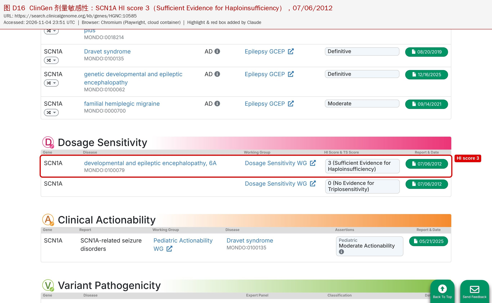
图 D16 ClinGen 剂量敏感性：SCN1A HI score 3（Sufficient Evidence for Haploinsufficiency），07/06/2012文件：screenshots/D16_ClinGen_剂量敏感性HI3.jpg | 来源：https://search.clinicalgenome.org/kb/genes/HGNC:10585 | 访问：2026-11-04 23:51 UTC D. 蛋白位置
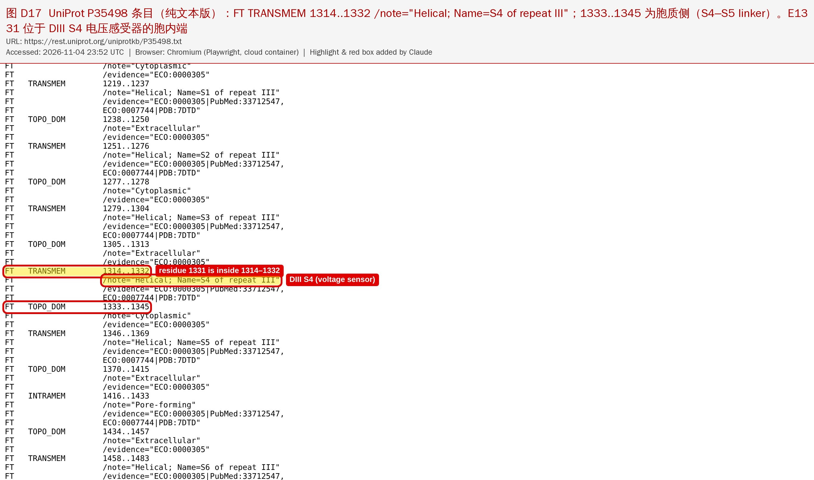
图 D17 UniProt P35498 条目（纯文本版）：FT TRANSMEM 1314..1332 /note="Helical; Name=S4 of repeat III"；1333..1345 为胞质侧（S4–S5 linker）。E1331 位于 DIII S4 电压感受器的胞内端文件：screenshots/D17_UniProt_拓扑_DIII_S4.jpg | 来源：https://rest.uniprot.org/uniprotkb/P35498.txt | 访问：2026-11-04 23:52 UTC E. 计算预测
p.(Glu1331Asp) 可由 c.3993A>T 或 c.3993A>C 产生，蛋白层面完全相同；两者的 REVEL、AlphaMissense 一致。Ensembl VEP 接口查询时返回 503/500，故改用 dbNSFP（D07）和 SpliceAI-lookup（D18–D21）。
REVEL 阈值 （Pejaver 等 2022，表 2；VCEP 指定 REVEL）：PP3_Supporting ≥0.644，Moderate ≥0.773，Strong ≥0.932；BP4_Supporting ≤0.290，Moderate ≤0.183，Strong ≤0.016，Very Strong ≤0.003。0.613 落在 0.290–0.644 之间 → PP3 和 BP4 都不适用 。阈值是通过 PMC 开放获取全文接口（PMC9748256）读出来核对的；PMC 网页对容器浏览器弹验证码，【需查】原文表 2 截图请在你的 Chrome 补 。SpliceAI-lookup 页面给 REVEL 0.613 记 0 分，与此一致（D19）。
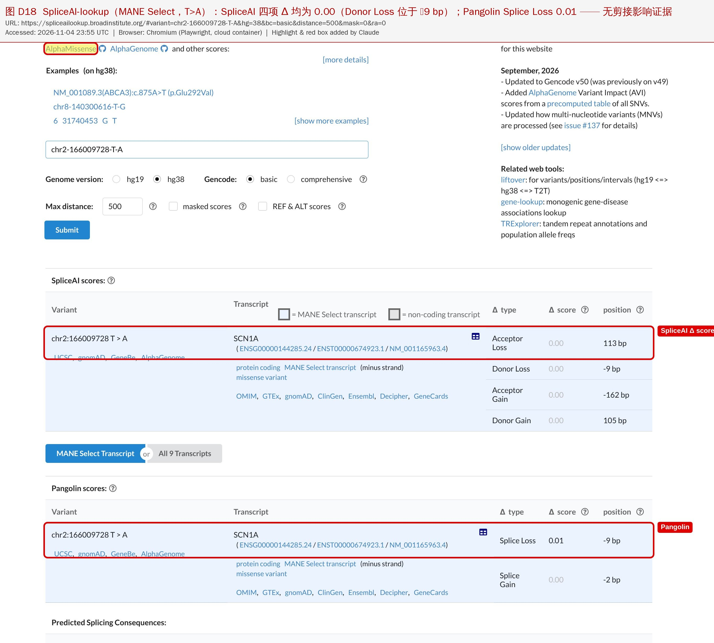
图 D18 SpliceAI-lookup（MANE Select，T>A）：SpliceAI 四项 Δ 均为 0.00（Donor Loss 位于 −9 bp）；Pangolin Splice Loss 0.01 —— 无剪接影响证据文件：screenshots/D18_SpliceAI_TA_剪接预测.jpg | 来源：https://spliceailookup.broadinstitute.org/#variant=chr2-166009728-T-A&hg=38&bc=basic&distance=500&mask=0&ra=0 | 访问：2026-11-04 23:55 UTC 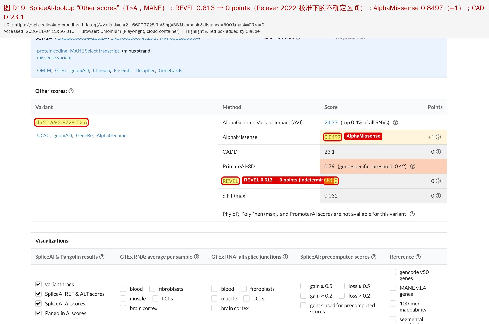
图 D19 SpliceAI-lookup “Other scores”（T>A，MANE）：REVEL 0.613 → 0 points（Pejaver 2022 校准下的不确定区间）；AlphaMissense 0.8497（+1）；CADD 23.1文件：screenshots/D19_SpliceAI_TA_REVEL_AlphaMissense.jpg | 来源：https://spliceailookup.broadinstitute.org/#variant=chr2-166009728-T-A&hg=38&bc=basic&distance=500&mask=0&ra=0 | 访问：2026-11-04 23:56 UTC 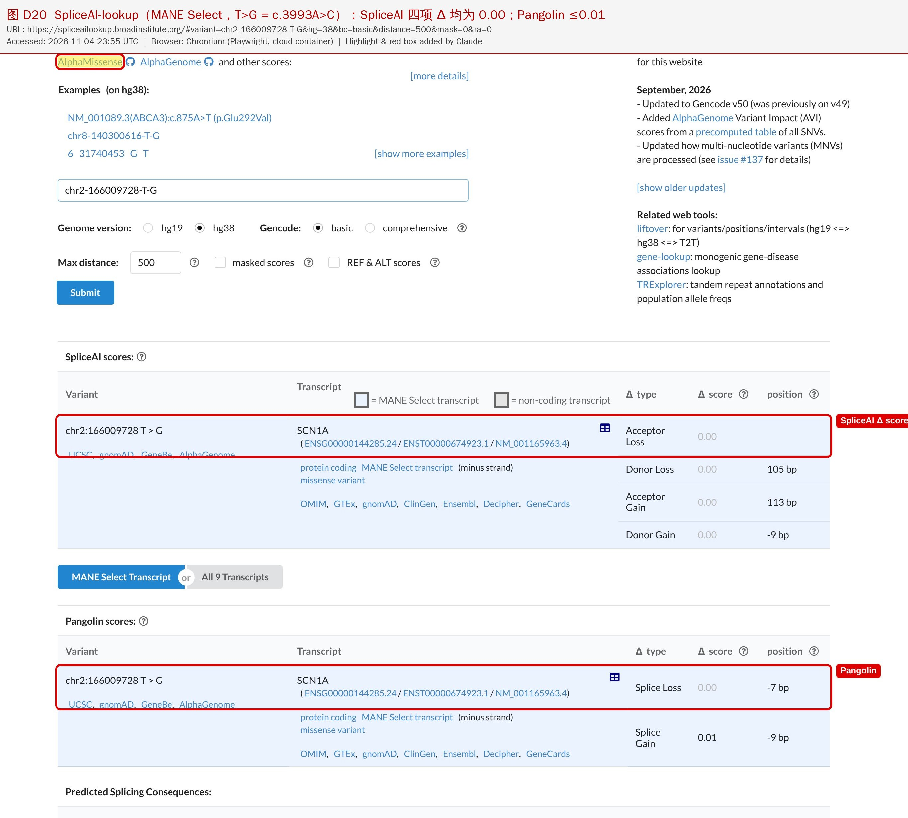
图 D20 SpliceAI-lookup（MANE Select，T>G = c.3993A>C）：SpliceAI 四项 Δ 均为 0.00；Pangolin ≤0.01文件：screenshots/D20_SpliceAI_TG_剪接预测.jpg | 来源：https://spliceailookup.broadinstitute.org/#variant=chr2-166009728-T-G&hg=38&bc=basic&distance=500&mask=0&ra=0 | 访问：2026-11-04 23:55 UTC 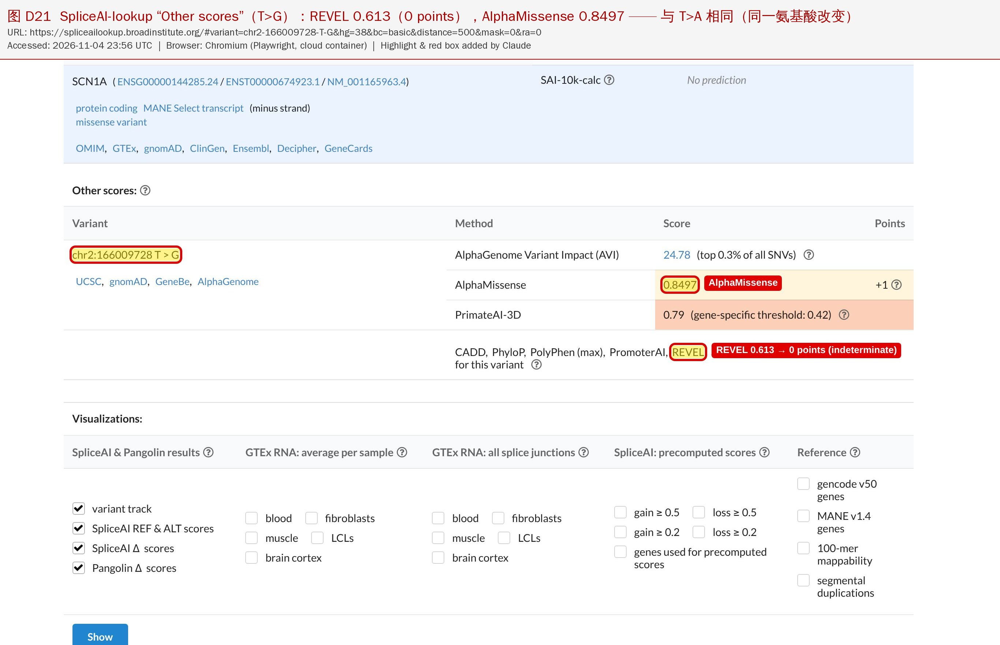
图 D21 SpliceAI-lookup “Other scores”（T>G）：REVEL 0.613（0 points），AlphaMissense 0.8497 —— 与 T>A 相同（同一氨基酸改变）文件：screenshots/D21_SpliceAI_TG_REVEL_AlphaMissense.jpg | 来源：https://spliceailookup.broadinstitute.org/#variant=chr2-166009728-T-G&hg=38&bc=basic&distance=500&mask=0&ra=0 | 访问：2026-11-04 23:56 UTC 保守性：手动比对（表 A1）
方法：从 UniProt REST 取序列，以人 SCN1A 1311–1351 为查询序列，用 Smith–Waterman 局部比对（BLOSUM62，线性空位罚分 −4，我自己写的脚本）定位对应残基。这是手动比对，不是数据库现成结果 ；UCSC 比对/phyloP 页面查询时超时，未能截图（dbNSFP 给出的 phyloP100way = 0.615，对应摆动位的核苷酸保守性，意义有限）。黄色列 = 人 SCN1A 第 1331 位。
物种 / 基因 UniProt 比对窗口（人 1311–1351） 对应残基 位置 Human SCN1A P35498 (Swiss-Prot) AIKSLRTLRALRPLRALSRFE GMRVVVNALLGAIPSIMNVL E 1331 Mouse Scn1a A2APX8 (Swiss-Prot) AIKSLRTLRALRPLRALSRFE GMRVVVNALLGAIPSIMNVL E 1331 Rat Scn1a P04774 (Swiss-Prot) AIKSLRTLRALRPLRALSRFE GMRVVVNALLGAIPSIMNVL E 1331 Cow SCN1A M0QW12 (TrEMBL) AIKSLRTLRALRPLRALSRFE GMRVVVNALLGAIPSIMNVL E 1331 Chicken SCN1A A0A8V1A8W9 (TrEMBL) AIKSLRTLRALRPLRALSRFE GMRVVVNALLGAIPSIMNVL E 1338 Xenopus tropicalis scn1a A0A8J1IT78 (TrEMBL) AIKSLRTLRALRPLRALSRFE GMRVVVNALIGAIPSIMNVL E 1329 Zebrafish scn1lab F1QXF5 (TrEMBL) AIKSLRTLRALRPLRALSRFE GMRVVVNALLGAIPSIMNVL E 1312 Zebrafish scn1laa Q20JQ9 (TrEMBL) AIKSLRTLRAFRPLRALSRFD GMRVVVNALLGAIPSIMNVL D 1280 Drosophila para P35500 (Swiss-Prot) AFKTMRTLRALRPLRAMSRMQ GMRVVVNALVQAIPSIFNVL Q 1414 Human SCN2A Q99250 (Swiss-Prot) AIKSLRTLRALRPLRALSRFE GMRVVVNALLGAIPSIMNVL E 1321 Human SCN3A Q9NY46 (Swiss-Prot) AIKSLRTLRALRPLRALSRFE GMRVVVNALVGAIPSIMNVL E 1319 Human SCN8A Q9UQD0 (Swiss-Prot) AIKSLRTLRALRPLRALSRFE GMRVVVNALVGAIPSIMNVL E 1311 Human SCN4A P35499 (Swiss-Prot) -IKSLRTLRALRPLRALSRFE GMRVVVNALLGAIPSIMNVL E 1144 Human SCN5A Q14524 (Swiss-Prot) -IKSLRTLRALRPLRALSRFE GMRVVVNALVGAIPSIMNVL E 1318 Human SCN9A Q15858 (Swiss-Prot) -IKSLRTLRALRPLRALSRFE GMRVVVNALIGAIPSIMNVL E 1305 Human SCN10A Q9Y5Y9 (Swiss-Prot) -IKALRTLRALRPLRALSRFE GMRVVVDALVGAIPSIMNVL E 1265 Human SCN11A Q9UI33 (Swiss-Prot) -LKSFRTLRALRPLRALSQFE GMKVVVNALIGAIPAILNVL E 1162
解读：Glu 在全部 9 个人类电压门控钠通道 α 亚基、以及哺乳动物、鸡、爪蟾、斑马鱼 scn1lab 中保守，支持该位点功能重要；但斑马鱼 scn1laa 天然为 Asp ，说明 E→D 这一保守替换至少在一个脊椎动物同源通道中可以耐受。这一点与 REVEL 处于不确定区间相符，写进报告时用 suggests / is consistent with 。
F. ClinGen Epilepsy Sodium Channel VCEP《SCN1A 细则》v2.0（GN067）
附件 PM1 Table、Paralogous Gene Table、PVS1 exon numbering 为 xlsx，在页面 Files & Images 点击下载按钮获得（保存在 ClinGen_VCEP附件/），D28、D29 是本地渲染后的截图，数值未改动。附件 “Combining Rules”（VCEP 的积分合并规则）和 “PS1_Variants impacting splicing” 是 PDF，按“PDF 只在你要求时下载”的规则没有下载 。
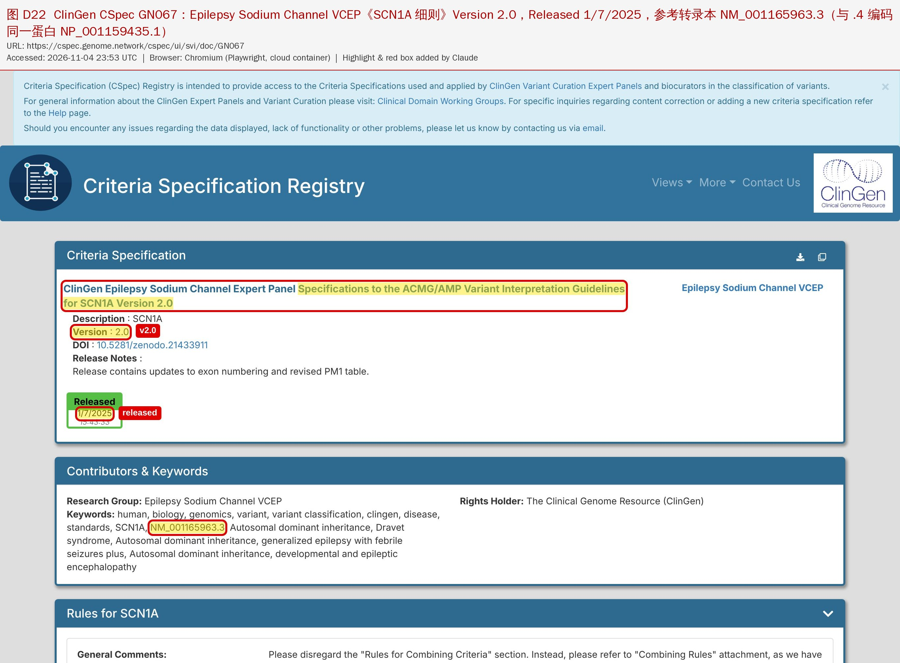
图 D22 ClinGen CSpec GN067：Epilepsy Sodium Channel VCEP《SCN1A 细则》Version 2.0，Released 1/7/2025，参考转录本 NM_001165963.3（与 .4 编码同一蛋白 NP_001159435.1）文件：screenshots/D22_ClinGen_VCEP_SCN1A细则v2.0.jpg | 来源：https://cspec.genome.network/cspec/ui/svi/doc/GN067 | 访问：2026-11-04 23:53 UTC 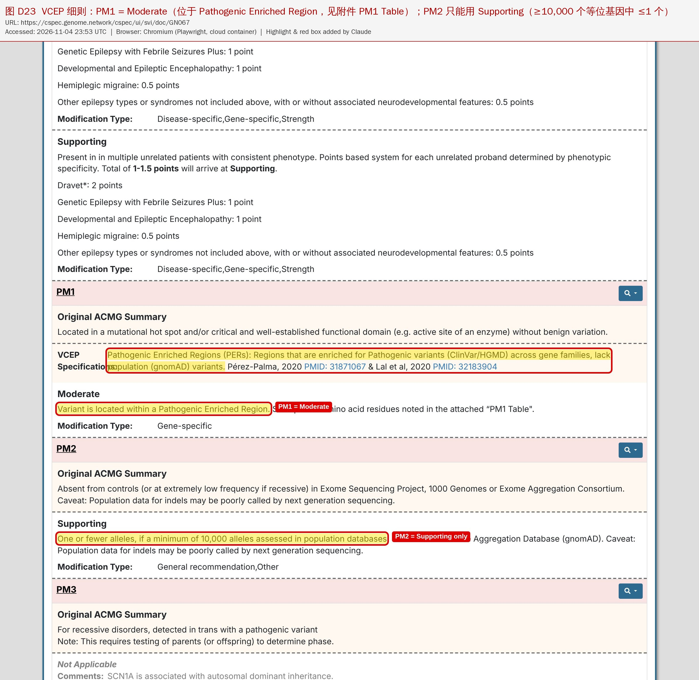
图 D23 VCEP 细则：PM1 = Moderate（位于 Pathogenic Enriched Region，见附件 PM1 Table）；PM2 只能用 Supporting（≥10,000 个等位基因中 ≤1 个）文件：screenshots/D23_VCEP_PM1_PM2.jpg | 来源：https://cspec.genome.network/cspec/ui/svi/doc/GN067 | 访问：2026-11-04 23:53 UTC 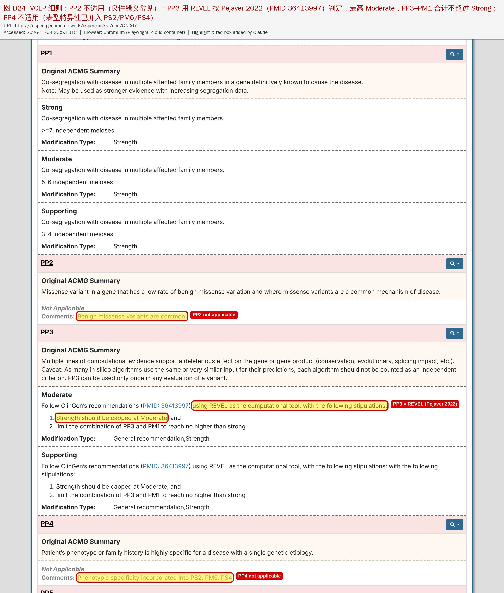
图 D24 VCEP 细则：PP2 不适用（良性错义常见）；PP3 用 REVEL 按 Pejaver 2022（PMID 36413997）判定，最高 Moderate，PP3+PM1 合计不超过 Strong；PP4 不适用（表型特异性已并入 PS2/PM6/PS4）文件：screenshots/D24_VCEP_PP2_PP3_PP4.jpg | 来源：https://cspec.genome.network/cspec/ui/svi/doc/GN067 | 访问：2026-11-04 23:53 UTC 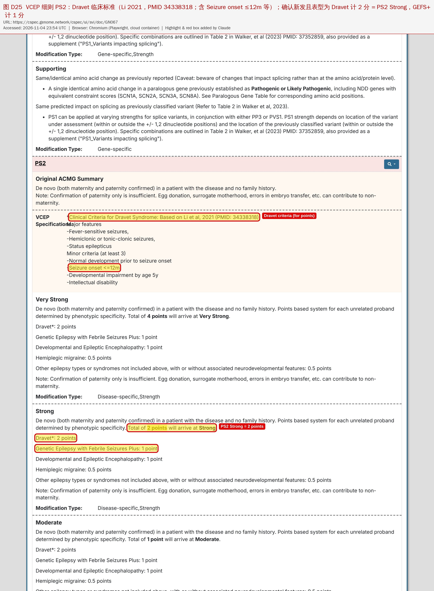
图 D25 VCEP 细则 PS2：Dravet 临床标准（Li 2021，PMID 34338318；含 Seizure onset ≤12m 等）；确认新发且表型为 Dravet 计 2 分 = PS2 Strong，GEFS+ 计 1 分文件：screenshots/D25_VCEP_PS2_Dravet标准与积分.jpg | 来源：https://cspec.genome.network/cspec/ui/svi/doc/GN067 | 访问：2026-11-04 23:54 UTC 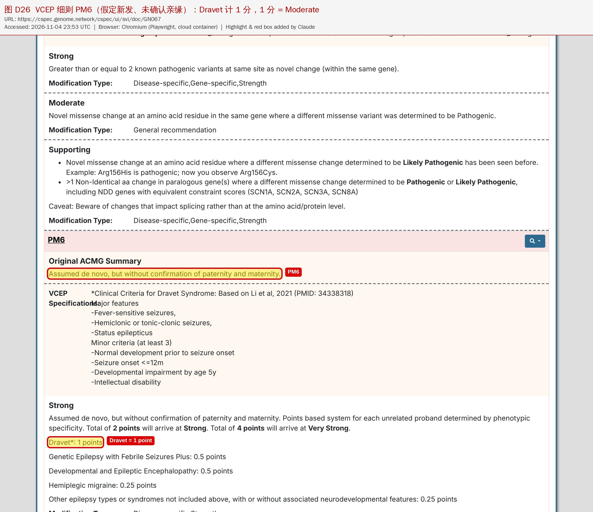
图 D26 VCEP 细则 PM6（假定新发、未确认亲缘）：Dravet 计 1 分，1 分 = Moderate文件：screenshots/D26_VCEP_PM6积分.jpg | 来源：https://cspec.genome.network/cspec/ui/svi/doc/GN067 | 访问：2026-11-04 23:53 UTC 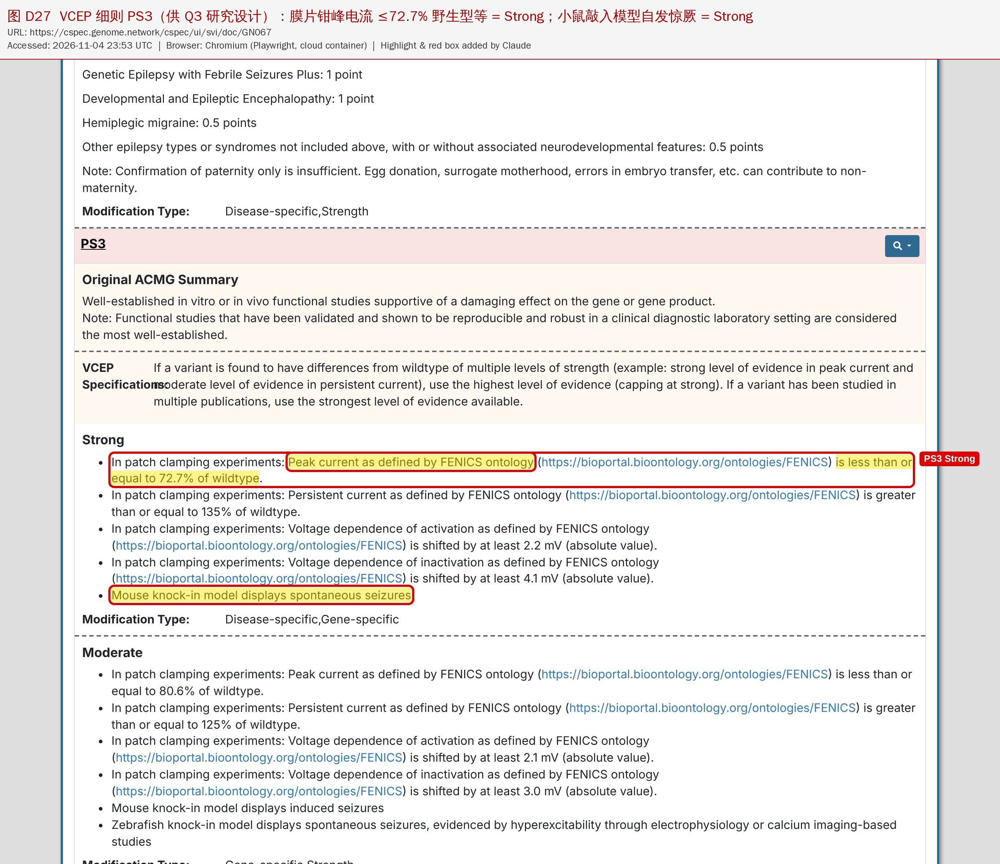
图 D27 VCEP 细则 PS3（供 Q3 研究设计）：膜片钳峰电流 ≤72.7% 野生型等 = Strong；小鼠敲入模型自发惊厥 = Strong文件：screenshots/D27_VCEP_PS3功能实验阈值.jpg | 来源：https://cspec.genome.network/cspec/ui/svi/doc/GN067 | 访问：2026-11-04 23:53 UTC 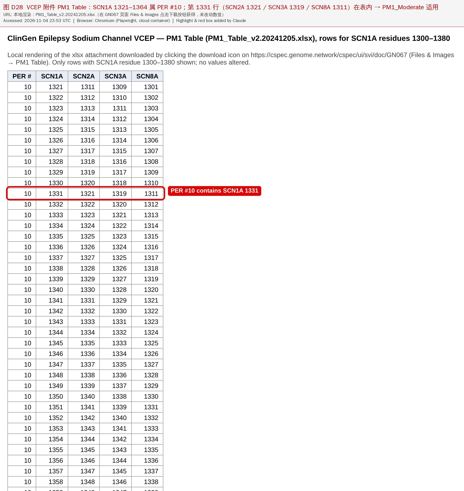
图 D28 VCEP 附件 PM1 Table：SCN1A 1321–1364 属 PER #10；第 1331 行（SCN2A 1321 / SCN3A 1319 / SCN8A 1311）在表内 → PM1_Moderate 适用文件：screenshots/D28_VCEP附件_PM1表_PER10.jpg | 来源：本地渲染：PM1_Table_v2.20241205.xlsx（在 GN067 页面 Files & Images 点击下载按钮获得，未改动数值） | 访问：2026-11-04 23:53 UTC 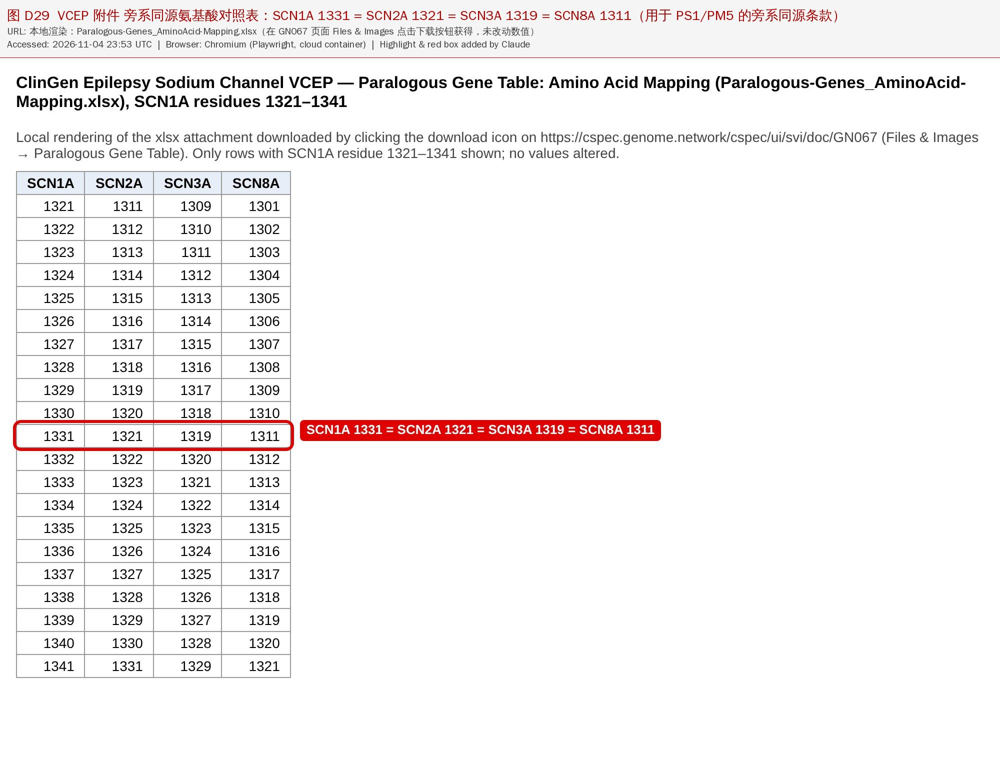
图 D29 VCEP 附件 旁系同源氨基酸对照表：SCN1A 1331 = SCN2A 1321 = SCN3A 1319 = SCN8A 1311（用于 PS1/PM5 的旁系同源条款）文件：screenshots/D29_VCEP附件_旁系同源对照表.jpg | 来源：本地渲染：Paralogous-Genes_AminoAcid-Mapping.xlsx（在 GN067 页面 Files & Images 点击下载按钮获得，未改动数值） | 访问：2026-11-04 23:53 UTC 附录：只用接口或脚本核对、没有截图的项目
NCBI E-utilities 下载 5 个 SCN1A RefSeq GenBank 记录并翻译（A5 补充说明）。
VariantValidator REST：c.3993A>C 同样给出 p.(Glu1331Asp)，GRCh38 g.166009728T>G（网页版每个匿名用户提交次数有限，只截了 C>T 和 A>T）。
gnomAD GraphQL API：区域内全部变异（含 AC0、AS_VQSR 等过滤变异）与逐位点覆盖度。
ClinVar E-utilities：SCN1A 全部 5,556 条、SCN2A 3,203 条、SCN3A 2,272 条、SCN8A 2,664 条记录的标题筛选。
PMC 开放获取全文接口：Pejaver 2022 表 2 的 REVEL 阈值。
待你在自己的 Chrome 补截的项目【需查】
NCBI RefSeq NM_001165963.4 页面（MANE Select 关键词、CDS 479..6508、ORIGIN 第 4441 行 “…ctcgatttga agggatgagg”）。
Pejaver 2022 表 2（PMC9748256）REVEL 行。
如果报告里要放 ClinVar 网页截图（而不是 E-utilities 输出），在 ClinVar 打开 VCV002036225（SCN2A E1321Q）。
UCSC 保守性（可选；已有手动比对代替）。